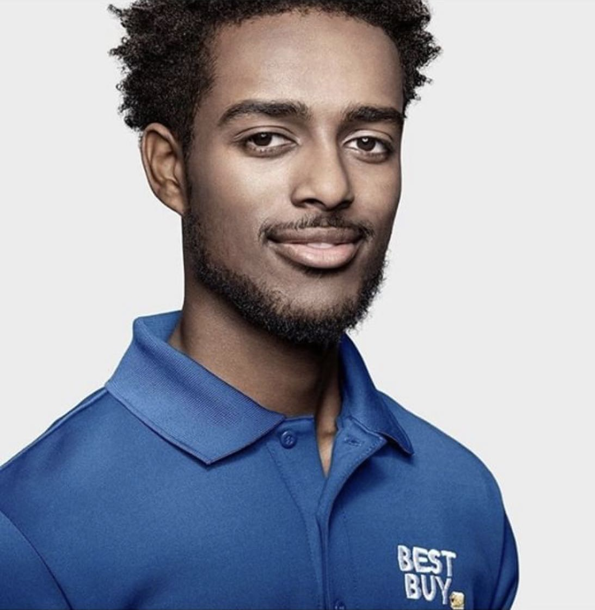
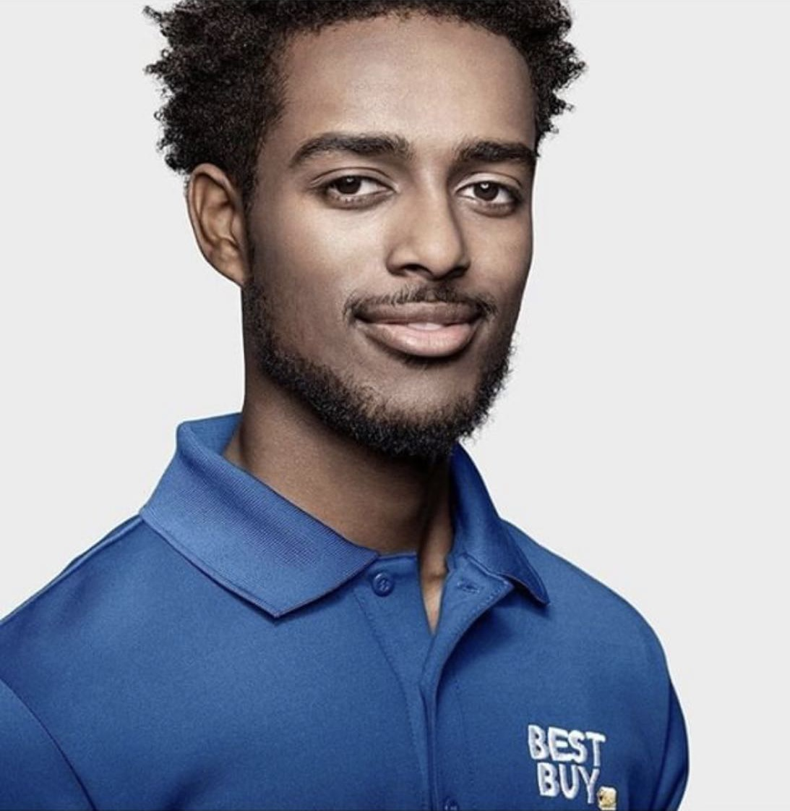

Hello, It's Kalif the developer. Welcome to my page!
I am a software developer living in Minneapolis, Minnesota.
Feel free to explore my page and don't hesitate to contact me if you absolutely have any questions or just want to connect!
Hello, It's Kalif the developer. Welcome to my page!
I am a software developer living in Minneapolis, Minnesota.
Feel free to explore my page and don't hesitate to contact me if you absolutely have any questions or just want to connect!
After I graduated from Park Center Senior High School, I went straight into working and became an Agent Consultation for Geek Squad at Best Buy. I spent countless hours working with clients and ended up working as a Client Contact Specialist at the Best Buy Headquarters in Richfield, MN. I have multiple friends and family who are Software Engineer's and they saw how much of a quick learner I was and how much I'm able to push myself and thoroughly understand what they were doing that lead them to tell me jokingly "You should just become a coder."
After 4 years in the retail industry it was time for me to finally consider their words! With technology all around us it was a no-brainer and I finally decided to learn how to code. Now a student at Thinkful, I hope to gain practical experience and skills to become a professional software developer.
Thank you for taking the time stopping by today!